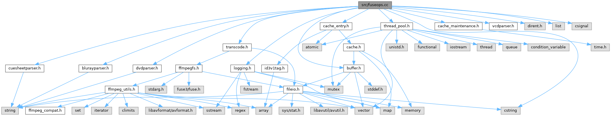

|
FFmpegfs Fuse Multi Media Filesystem 2.19
|
Fuse operations implementation. More...
#include "transcode.h"#include "cache_maintenance.h"#include "logging.h"#include "vcdparser.h"#include "dvdparser.h"#include "blurayparser.h"#include "cuesheetparser.h"#include "thread_pool.h"#include "buffer.h"#include "cache_entry.h"#include <dirent.h>#include <list>#include <csignal>#include <cstring>
Go to the source code of this file.
Typedefs | |
| typedef std::map< const std::string, VIRTUALFILE > | FILENAME_MAP |
| Map virtual file names to virtual file objects. | |
| typedef std::map< const std::string, VIRTUALFILE > | RFILENAME_MAP |
| Map source file names to virtual file objects. | |
Functions | |
| static void | init_stat (struct stat *stbuf, size_t fsize, time_t ftime, bool directory) |
| Initialise a stat structure. | |
| static LPVIRTUALFILE | make_file (void *buf, fuse_fill_dir_t filler, VIRTUALTYPE type, const std::string &origpath, const std::string &filename, size_t fsize, time_t ftime, int flags) |
| Make a virtual file. | |
| static void | prepare_script () |
| Read the virtual script file into memory and store in buffer. | |
| static bool | is_passthrough (const std::string &ext) |
| Check if a file should be treated passthrough, i.e. bitmaps etc. | |
| static bool | virtual_name (std::string *virtualpath, const std::string &origpath, const FFmpegfs_Format **current_format) |
| Convert file name from source to destination name. | |
| static FILENAME_MAP::const_iterator | find_prefix (const FILENAME_MAP &map, const std::string &search_for) |
| Find mapped file by prefix. Normally used to find a path. | |
| static void | stat_to_dir (struct stat *stbuf) |
| Convert stbuf to directory. | |
| static void | flags_to_dir (int *flags) |
| Convert flags to directory. | |
| static void | insert (const VIRTUALFILE &virtualfile) |
| Insert virtualfile into list. | |
| static int | get_source_properties (const std::string &origpath, LPVIRTUALFILE virtualfile) |
| Calculate the video frame count. | |
| static int | make_hls_fileset (void *buf, fuse_fill_dir_t filler, const std::string &origpath, LPVIRTUALFILE virtualfile) |
| Build a virtual HLS file set. | |
| static int | kick_next (LPVIRTUALFILE virtualfile) |
| Give next song in cuesheet list a kick start Starts transcoding of the next song on the cuesheet list to ensure a somewhat gapless start when the current song finishes. Next song can be played from cache and start faster then. | |
| static void | sighandler (int signum) |
| Replacement SIGINT handler. | |
| static std::string | get_number (const char *path, uint32_t *value) |
| Extract the number for a file name. | |
| static size_t | guess_format_idx (const std::string &filepath) |
| Try to guess the format index (audio or video) for a file. | |
| static int | parse_file (LPVIRTUALFILE newvirtualfile) |
| Open file with FFmpeg API and parse for streams and cue sheet. | |
| static const FFmpegfs_Format * | get_format (LPVIRTUALFILE newvirtualfile) |
| Get FFmpegfs_Format for the file. | |
| static int | selector (const struct dirent *de) |
| Filter function used for scandir. | |
| static int | scandir (const char *dirp, std::vector< struct dirent > *_namelist, int(*selector)(const struct dirent *), int(*cmp)(const struct dirent **, const struct dirent **)) |
| Scans the directory dirp Works exactly like the scandir(3) function, the only difference is that it returns the result in a std:vector. | |
| static int | ffmpegfs_readlink (const char *path, char *buf, size_t size) |
| Read the target of a symbolic link. | |
| static int | ffmpegfs_readdir (const char *path, void *buf, fuse_fill_dir_t filler, off_t, struct fuse_file_info *, enum fuse_readdir_flags) |
| Read directory. | |
| static int | ffmpegfs_getattr (const char *path, struct stat *stbuf, struct fuse_file_info *) |
| Get file attributes. | |
| static int | ffmpegfs_open (const char *path, struct fuse_file_info *fi) |
| Get attributes from an open file. | |
| static int | ffmpegfs_read (const char *path, char *buf, size_t size, off_t offset, struct fuse_file_info *fi) |
| Read data from an open file. | |
| static int | ffmpegfs_statfs (const char *path, struct statvfs *stbuf) |
| Get file system statistics. | |
| static int | ffmpegfs_release (const char *path, struct fuse_file_info *fi) |
| Release an open file. | |
| static void * | ffmpegfs_init (struct fuse_conn_info *, struct fuse_config *) |
| Initialise filesystem. | |
| static void | ffmpegfs_destroy (__attribute__((unused)) void *p) |
| Clean up filesystem. | |
| void | init_fuse_ops () |
| Initialise FUSE operation structure. | |
| LPVIRTUALFILE | insert_file (VIRTUALTYPE type, const std::string &virtfile, const struct stat *stbuf, int flags) |
| Add new virtual file to internal list. | |
| LPVIRTUALFILE | insert_file (VIRTUALTYPE type, const std::string &virtfile, const std::string &origfile, const struct stat *stbuf, int flags) |
| Add new virtual file to internal list. If the file already exists, it will be updated. | |
| LPVIRTUALFILE | insert_dir (VIRTUALTYPE type, const std::string &virtdir, const struct stat *stbuf, int flags) |
| Add new virtual directory to the internal list. If the file already exists, it will be updated. | |
| LPVIRTUALFILE | find_file (const std::string &virtfile) |
| Find file in cache. | |
| LPVIRTUALFILE | find_file_from_orig (const std::string &origfile) |
| Look for the file in the cache. | |
| bool | check_path (const std::string &path) |
| Check if the path has already been parsed. Only useful if for DVD, Blu-ray or VCD where it is guaranteed that all files have been parsed whenever the directory is in the hash. | |
| int | load_path (const std::string &path, const struct stat *statbuf, void *buf, fuse_fill_dir_t filler) |
| Load a path with virtual files for FUSE. | |
| LPVIRTUALFILE | find_original (const std::string &origpath) |
| Given the destination (post-transcode) file name, determine the parent of the file to be transcoded. | |
| LPVIRTUALFILE | find_original (std::string *filepath) |
| Given the destination (post-transcode) file name, determine the name of the original file to be transcoded. | |
| LPVIRTUALFILE | find_parent (const std::string &origpath) |
| Given the destination (post-transcode) file name, determine the parent of the file to be transcoded. | |
| int | add_fuse_entry (void *buf, fuse_fill_dir_t filler, const std::string &name, const struct stat *stbuf, off_t) |
| Wrapper to the Fuse filler function. | |
| int | add_dotdot (void *buf, fuse_fill_dir_t filler, const struct stat *stbuf, off_t off) |
| Make dot and double dot entries for a virtual directory. | |
Variables | |
| static FILENAME_MAP | filenames |
| Map files to virtual files. | |
| static RFILENAME_MAP | rfilenames |
| Reverse map virtual files to real files. | |
| static std::vector< char > | script_file |
| Buffer for the virtual script if enabled. | |
| static struct sigaction | oldHandler |
| Saves old SIGINT handler to restore on shutdown. | |
| bool | docker_client |
| True if running inside a Docker container. | |
| fuse_operations | ffmpegfs_ops |
| FUSE file system operations. | |
| std::unique_ptr< thread_pool > | tp |
| Thread pool object. | |
Fuse operations implementation.
Definition in file fuseops.cc.
| typedef std::map<const std::string, VIRTUALFILE> FILENAME_MAP |
Map virtual file names to virtual file objects.
Definition at line 58 of file fuseops.cc.
| typedef std::map<const std::string, VIRTUALFILE> RFILENAME_MAP |
Map source file names to virtual file objects.
Definition at line 59 of file fuseops.cc.
| int add_dotdot | ( | void * | buf, |
| fuse_fill_dir_t | filler, | ||
| const struct stat * | stbuf, | ||
| off_t | off | ||
| ) |
Make dot and double dot entries for a virtual directory.
| [in,out] | buf | - The buffer passed to the readdir() operation. May be nullptr. |
| [in] | filler | - Function pointer to the Fuse update function. May be nullptr. |
| [in] | stbuf | - File attributes. May be nullptr. |
| [in] | off | - Offset of the next entry or zero. |
Definition at line 2417 of file fuseops.cc.
References add_fuse_entry(), and init_stat().
Referenced by check_bluray(), check_dvd(), check_vcd(), and ffmpegfs_readdir().
| int add_fuse_entry | ( | void * | buf, |
| fuse_fill_dir_t | filler, | ||
| const std::string & | name, | ||
| const struct stat * | stbuf, | ||
| off_t | off | ||
| ) |
Wrapper to the Fuse filler function.
| [in,out] | buf | - The buffer passed to the readdir() operation. May be nullptr. |
| [in] | filler | - Function pointer to the Fuse update function. May be nullptr. |
| [in] | name | - The file name of the directory entry. Do not include the path! |
| [in] | stbuf | - File attributes, can be nullptr. |
| [in] | off | - Offset of the next entry or zero. |
Definition at line 2406 of file fuseops.cc.
Referenced by add_dotdot(), create_bluray_virtualfile(), create_dvd_virtualfile(), create_vcd_virtualfile(), ffmpegfs_readdir(), load_path(), and make_file().
| bool check_path | ( | const std::string & | path | ) |
Check if the path has already been parsed. Only useful if for DVD, Blu-ray or VCD where it is guaranteed that all files have been parsed whenever the directory is in the hash.
| [in] | path | - Path to parse. |
Definition at line 1752 of file fuseops.cc.
References filenames, and find_prefix().
Referenced by check_bluray(), check_cuesheet(), check_dvd(), and check_vcd().
|
static |
Clean up filesystem.
| [in] | p | - unused |
Definition at line 1385 of file fuseops.cc.
References FFMPEFS_VERSION, Logging::info(), script_file, stop_cache_maintenance(), tp, transcoder_exit(), and transcoder_free().
Referenced by init_fuse_ops().
|
static |
Get file attributes.
| [in] | path | - Path of virtual file. |
| [in] | stbuf | - Buffer to store information. |
<
Definition at line 542 of file fuseops.cc.
References append_basepath(), append_sep(), BLURAY, BUFFER, check_bluray(), check_cuesheet(), check_dvd(), check_ext(), check_vcd(), FFMPEGFS_PARAMS::current_format(), Logging::debug(), DISK, DVD, FALLTHROUGH_INTENDED, ffmpeg_format, FFmpegfs_Format::fileext(), find_original(), find_parent(), flags_to_dir(), get_source_properties(), insert_file(), is_blocked(), FFmpegfs_Format::is_frameset(), FFmpegfs_Format::is_hls(), FFmpegfs_Format::is_multiformat(), VIRTUALFILE::m_destfile, VIRTUALFILE::m_flags, VIRTUALFILE::m_predicted_size, VIRTUALFILE::m_st, VIRTUALFILE::m_type, VIRTUALFILE::m_video_frame_count, make_file(), make_filename(), make_hls_fileset(), params, PASSTHROUGH, remove_ext(), remove_filename(), SCRIPT, stat_set_size(), stat_to_dir(), Logging::trace(), TRACKDIR, transcoder_cached_filesize(), transcoder_delete(), transcoder_get_size(), transcoder_new(), VCD, virtual_name(), VIRTUALFLAG_CUESHEET, VIRTUALFLAG_DIRECTORY, VIRTUALFLAG_FILESET, VIRTUALFLAG_FRAME, VIRTUALFLAG_HIDDEN, VIRTUALFLAG_HLS, VIRTUALFLAG_NONE, and VIRTUALFLAG_PASSTHROUGH.
Referenced by init_fuse_ops().
|
static |
Initialise filesystem.
| [in] | conn | - fuse_conn_info structure of FUSE. See FUSE docs for details. |
Definition at line 1336 of file fuseops.cc.
References docker_client, FFMPEFS_VERSION, Logging::info(), FFMPEGFS_PARAMS::m_basepath, FFMPEGFS_PARAMS::m_cache_maintenance, FFMPEGFS_PARAMS::m_enablescript, FFMPEGFS_PARAMS::m_max_threads, FFMPEGFS_PARAMS::m_mountpath, oldHandler, params, prepare_script(), sighandler(), start_cache_maintenance(), and tp.
Referenced by init_fuse_ops().
|
static |
Get attributes from an open file.
| [in] | path | |
| [in] | stbuf | |
| [in] | fi |
File open operation
| [in] | path | |
| [in] | fi |
Definition at line 971 of file fuseops.cc.
References append_basepath(), BLURAY, BUFFER, DISK, DVD, find_original(), find_parent(), kick_next(), VIRTUALFILE::m_flags, VIRTUALFILE::m_type, PASSTHROUGH, SCRIPT, Logging::trace(), transcoder_new(), VCD, VIRTUALFLAG_FILESET, VIRTUALFLAG_FRAME, VIRTUALFLAG_HLS, and VIRTUALFLAG_PASSTHROUGH.
Referenced by init_fuse_ops().
|
static |
Read data from an open file.
| [in] | path | |
| [in] | buf | |
| [in] | size | |
| [in] | offset | |
| [in] | fi |
Definition at line 1090 of file fuseops.cc.
References append_basepath(), BLURAY, BUFFER, DISK, DVD, Logging::error(), find_original(), get_number(), VIRTUALFILE::m_file_contents, VIRTUALFILE::m_flags, VIRTUALFILE::m_type, PASSTHROUGH, SCRIPT, Logging::trace(), transcoder_read(), transcoder_read_frame(), VCD, VIRTUALFLAG_FILESET, VIRTUALFLAG_FRAME, VIRTUALFLAG_HLS, and VIRTUALFLAG_PASSTHROUGH.
Referenced by init_fuse_ops().
|
static |
Read directory.
| [in] | path | - Physical path to load. |
| [in] | buf | - FUSE buffer to fill. |
| [in] | filler | - Filler function. |
<
Definition at line 304 of file fuseops.cc.
References add_dotdot(), add_fuse_entry(), append_basepath(), append_sep(), check_bluray(), check_cuesheet(), check_dvd(), check_vcd(), FFMPEGFS_PARAMS::current_format(), Logging::debug(), DISK, Logging::error(), FFmpegfs_Format::fileext(), find_ext(), find_file_from_orig(), find_original(), flags_to_dir(), get_source_properties(), insert_file(), is_blocked(), FFmpegfs_Format::is_frameset(), FFmpegfs_Format::is_hls(), FFmpegfs_Format::is_multiformat(), load_path(), FFMPEGFS_PARAMS::m_enablescript, VIRTUALFILE::m_file_contents, VIRTUALFILE::m_flags, VIRTUALFILE::m_has_audio, VIRTUALFILE::m_predicted_size, FFMPEGFS_PARAMS::m_recodesame, FFMPEGFS_PARAMS::m_scriptfile, VIRTUALFILE::m_st, VIRTUALFILE::m_type, VIRTUALFILE::m_video_frame_count, make_file(), make_filename(), make_hls_fileset(), params, SCRIPT, script_file, stat_to_dir(), Logging::trace(), FFmpegfs_Format::video_codec(), virtual_name(), VIRTUALFLAG_CUESHEET, VIRTUALFLAG_DIRECTORY, VIRTUALFLAG_FILESET, VIRTUALFLAG_FRAME, VIRTUALFLAG_HIDDEN, VIRTUALFLAG_HLS, VIRTUALFLAG_PASSTHROUGH, and YES.
Referenced by init_fuse_ops().
|
static |
Read the target of a symbolic link.
| [in] | path | |
| [in] | buf | - FUSE buffer to fill. |
| [in] | size |
Definition at line 269 of file fuseops.cc.
References append_basepath(), find_original(), Logging::trace(), and virtual_name().
Referenced by init_fuse_ops().
|
static |
Release an open file.
| [in] | path | |
| [in] | fi |
Definition at line 1302 of file fuseops.cc.
References CACHE_FLAG_RO, Logging::error(), get_number(), Cache_Entry::m_buffer, VIRTUALFILE::m_flags, Logging::trace(), transcoder_delete(), Cache_Entry::virtualfile(), and VIRTUALFLAG_HLS.
Referenced by init_fuse_ops().
|
static |
Get file system statistics.
| [in] | path | |
| [in] | stbuf |
Definition at line 1266 of file fuseops.cc.
References append_basepath(), find_original(), and Logging::trace().
Referenced by init_fuse_ops().
| LPVIRTUALFILE find_file | ( | const std::string & | virtfile | ) |
Find file in cache.
| [in] | virtfile | - Virtual filename and path of file to find. |
Definition at line 1734 of file fuseops.cc.
References filenames, and sanitise_filepath().
Referenced by check_cuesheet(), FFmpeg_Transcoder::encode_finish(), and find_original().
| LPVIRTUALFILE find_file_from_orig | ( | const std::string & | origfile | ) |
Look for the file in the cache.
| [in] | origfile | - Filename and path of file to find. |
Definition at line 1743 of file fuseops.cc.
References rfilenames, and sanitise_filepath().
Referenced by check_cuesheet(), ffmpegfs_readdir(), and get_format().
| LPVIRTUALFILE find_original | ( | const std::string & | origpath | ) |
Given the destination (post-transcode) file name, determine the parent of the file to be transcoded.
| [in] | origpath | - The original file |
Definition at line 1894 of file fuseops.cc.
References find_original().
Referenced by ffmpegfs_getattr(), ffmpegfs_open(), ffmpegfs_read(), ffmpegfs_readdir(), ffmpegfs_readlink(), ffmpegfs_statfs(), find_original(), and find_parent().
| LPVIRTUALFILE find_original | ( | std::string * | filepath | ) |
Given the destination (post-transcode) file name, determine the name of the original file to be transcoded.
| [in,out] | filepath | - Input the original file, output name of transcoded file. |
<*
Definition at line 1900 of file fuseops.cc.
References append_filename(), DISK, Logging::error(), ffmpeg_format, find_ext(), find_file(), insert_file(), VIRTUALFILE::m_origfile, params, remove_ext(), remove_filename(), remove_path(), sanitise_filepath(), scandir(), selector(), FFMPEGFS_PARAMS::smart_transcode(), strcasecmp(), and VIRTUALFLAG_PASSTHROUGH.
| LPVIRTUALFILE find_parent | ( | const std::string & | origpath | ) |
Given the destination (post-transcode) file name, determine the parent of the file to be transcoded.
| [in] | origpath | - The original file |
Definition at line 1982 of file fuseops.cc.
References find_original(), remove_filename(), and remove_sep().
Referenced by ffmpegfs_getattr(), and ffmpegfs_open().
|
static |
Find mapped file by prefix. Normally used to find a path.
| [in] | map | - File map with virtual files. |
| [in] | search_for | - Prefix (path) to search for. |
Definition at line 1614 of file fuseops.cc.
Referenced by check_path().
|
static |
Convert flags to directory.
| [in,out] | flags | - Flags variable to change |
Definition at line 1703 of file fuseops.cc.
References ffmpeg_format, VIRTUALFLAG_DIRECTORY, VIRTUALFLAG_FILESET, VIRTUALFLAG_FRAME, and VIRTUALFLAG_HLS.
Referenced by ffmpegfs_getattr(), ffmpegfs_readdir(), insert_dir(), and virtual_name().
|
static |
Get FFmpegfs_Format for the file.
| [in,out] | newvirtualfile | - VIRTUALFILE object of file to parse |
Definition at line 2365 of file fuseops.cc.
References FFMPEGFS_PARAMS::current_format(), ffmpeg_format, find_file_from_orig(), VIRTUALFILE::m_format_idx, VIRTUALFILE::m_has_audio, VIRTUALFILE::m_has_subtitle, VIRTUALFILE::m_has_video, VIRTUALFILE::m_origfile, params, parse_file(), FFMPEGFS_PARAMS::smart_transcode(), and Logging::trace().
Referenced by virtual_name().
|
static |
Extract the number for a file name.
| [in] | path | - Path and filename of requested file |
| [out] | value | - Returns the number extracted |
Definition at line 2214 of file fuseops.cc.
References remove_path().
Referenced by ffmpegfs_read(), and ffmpegfs_release().
|
static |
Calculate the video frame count.
| [in] | origpath | - Path of original file. |
| [in,out] | virtualfile | - Virtual file object to modify. |
Definition at line 1412 of file fuseops.cc.
References Logging::debug(), VIRTUALFILE::get_segment_count(), VIRTUALFILE::m_duration, VIRTUALFILE::m_video_frame_count, transcoder_delete(), and transcoder_new().
Referenced by ffmpegfs_getattr(), ffmpegfs_readdir(), and make_hls_fileset().
|
static |
Try to guess the format index (audio or video) for a file.
| [in] | filepath | - Name of the file, path my be included, but not required. |
Definition at line 2231 of file fuseops.cc.
References ffmpeg_format, is_album_art(), params, and FFMPEGFS_PARAMS::smart_transcode().
Referenced by insert_file().
| void init_fuse_ops | ( | ) |
Initialise FUSE operation structure.
Definition at line 247 of file fuseops.cc.
References ffmpegfs_destroy(), ffmpegfs_getattr(), ffmpegfs_init(), ffmpegfs_open(), ffmpegfs_ops, ffmpegfs_read(), ffmpegfs_readdir(), ffmpegfs_readlink(), ffmpegfs_release(), and ffmpegfs_statfs().
Referenced by main().
|
static |
Initialise a stat structure.
| [in] | stbuf | - struct stat to fill in. |
| [in] | fsize | - size of the corresponding file. |
| [in] | ftime | - File time (creation/modified/access) of the corresponding file. |
| [in] | directory | - If true, the structure is set up for a directory. |
Definition at line 1434 of file fuseops.cc.
References stat_set_size().
Referenced by add_dotdot(), and make_file().
|
static |
Insert virtualfile into list.
| [in] | virtualfile | - VIRTUALFILE object to insert |
Definition at line 1632 of file fuseops.cc.
References filenames, VIRTUALFILE::m_destfile, VIRTUALFILE::m_origfile, and rfilenames.
Referenced by insert_file(), and virtual_name().
| LPVIRTUALFILE insert_dir | ( | VIRTUALTYPE | type, |
| const std::string & | virtdir, | ||
| const struct stat * | stbuf, | ||
| int | flags = VIRTUALFLAG_NONE |
||
| ) |
Add new virtual directory to the internal list. If the file already exists, it will be updated.
| [in] | type | - Type of virtual file. |
| [in] | virtdir | - Name of virtual directory. |
| [in] | stbuf | - stat buffer with file size, time etc. |
| [in] | flags | - One of the VIRTUALFLAG_* flags to control the detailed behaviour. |
Definition at line 1717 of file fuseops.cc.
References append_sep(), flags_to_dir(), insert_file(), and stat_to_dir().
Referenced by create_bluray_virtualfile(), create_cuesheet_virtualfile(), create_dvd_virtualfile(), create_vcd_virtualfile(), and parse_cuesheet().
| LPVIRTUALFILE insert_file | ( | VIRTUALTYPE | type, |
| const std::string & | virtfile, | ||
| const std::string & | origfile, | ||
| const struct stat * | stbuf, | ||
| int | flags = VIRTUALFLAG_NONE |
||
| ) |
Add new virtual file to internal list. If the file already exists, it will be updated.
| [in] | type | - Type of virtual file. |
| [in] | virtfile | - Name of virtual file. |
| [in] | origfile | - Original file name. |
| [in] | stbuf | - stat buffer with file size, time etc. |
| [in] | flags | - One of the VIRTUALFLAG_* flags to control the detailed behaviour. |
Definition at line 1643 of file fuseops.cc.
References filenames, guess_format_idx(), insert(), FFMPEGFS_PARAMS::m_basepath, VIRTUALFILE::m_destfile, VIRTUALFILE::m_flags, VIRTUALFILE::m_format_idx, FFMPEGFS_PARAMS::m_mountpath, VIRTUALFILE::m_origfile, VIRTUALFILE::m_st, VIRTUALFILE::m_type, VIRTUALFILE::m_virtfile, params, replace_start(), and sanitise_filepath().
| LPVIRTUALFILE insert_file | ( | VIRTUALTYPE | type, |
| const std::string & | virtfile, | ||
| const struct stat * | stbuf, | ||
| int | flags = VIRTUALFLAG_NONE |
||
| ) |
Add new virtual file to internal list.
For Blu-ray/DVD/VCD, actually, no physical input file exists, so virtual and origfile are the same.
The input file is handled by the BlurayIO or VcdIO classes.
For cue sheets, the original (huge) input file is used. Start positions are sought; end positions are reported as EOF.
| [in] | type | - Type of virtual file. |
| [in] | virtfile | - Name of virtual file. |
| [in] | stbuf | - stat buffer with file size, time etc. |
| [in] | flags | - One of the VIRTUALFLAG_* flags to control the detailed behaviour. |
Definition at line 1638 of file fuseops.cc.
References insert_file().
Referenced by create_bluray_virtualfile(), create_cuesheet_virtualfile(), create_dvd_virtualfile(), create_vcd_virtualfile(), ffmpegfs_getattr(), ffmpegfs_readdir(), find_original(), insert_dir(), insert_file(), and make_file().
|
static |
Check if a file should be treated passthrough, i.e. bitmaps etc.
| [in] | ext | - Extension of file to check |
List of passthrough file extensions
Definition at line 109 of file fuseops.cc.
Referenced by virtual_name().
|
static |
Give next song in cuesheet list a kick start Starts transcoding of the next song on the cuesheet list to ensure a somewhat gapless start when the current song finishes. Next song can be played from cache and start faster then.
| [in] | virtualfile | - VIRTUALFILE object of current song |
Definition at line 2156 of file fuseops.cc.
References Logging::debug(), VIRTUALFILE::m_cuesheet_track, VIRTUALFILE::m_destfile, VIRTUALFILE::CUESHEET_TRACK::m_nextfile, transcoder_delete(), and transcoder_new().
Referenced by ffmpegfs_open().
| int load_path | ( | const std::string & | path, |
| const struct stat * | statbuf, | ||
| void * | buf, | ||
| fuse_fill_dir_t | filler | ||
| ) |
Load a path with virtual files for FUSE.
| [in] | path | - Physical path to load. |
| [in] | statbuf | - stat buffer to load. |
| [in] | buf | - FUSE buffer to fill. |
| [in] | filler | - Filler function. |
Definition at line 1759 of file fuseops.cc.
References add_fuse_entry(), BLURAY, FFMPEGFS_PARAMS::current_format(), DVD, FFmpegfs_Format::fileext(), filenames, VIRTUALFILE::m_destfile, VIRTUALFILE::m_flags, VIRTUALFILE::m_st, VIRTUALFILE::m_type, Buffer::make_cachefile_name(), params, remove_filename(), remove_path(), remove_sep(), stat_set_size(), VCD, VIRTUALFLAG_CUESHEET, and VIRTUALFLAG_DIRECTORY.
Referenced by check_bluray(), check_dvd(), check_vcd(), and ffmpegfs_readdir().
|
static |
Make a virtual file.
| [in] | buf | - FUSE buffer to fill. |
| [in] | filler | - Filler function. |
| [in] | type | - Type of virtual file. |
| [in] | origpath | - Original path. |
| [in] | filename | - Name of virtual file. |
| [in] | flags | - On of the VIRTUALFLAG_ macros. |
| [in] | fsize | - Size of virtual file. |
| [in] | ftime | - Time of virtual file. |
Definition at line 1472 of file fuseops.cc.
References add_fuse_entry(), init_stat(), and insert_file().
Referenced by ffmpegfs_getattr(), ffmpegfs_readdir(), and make_hls_fileset().
|
static |
Build a virtual HLS file set.
| [in,out] | buf | - The buffer passed to the readdir() operation. |
| [in,out] | filler | - Function to add an entry in a readdir() operation (see https://libfuse.github.io/doxygen/fuse_8h.html#a7dd132de66a5cc2add2a4eff5d435660) |
| [in] | origpath | - The original file |
| [in] | virtualfile | - LPCVIRTUALFILE of file to create file set for |
Definition at line 2000 of file fuseops.cc.
References FFMPEGFS_PARAMS::current_format(), FFmpegfs_Format::fileext(), VIRTUALFILE::get_segment_count(), get_source_properties(), VIRTUALFILE::m_duration, VIRTUALFILE::m_file_contents, VIRTUALFILE::m_predicted_size, FFMPEGFS_PARAMS::m_segment_duration, VIRTUALFILE::m_st, VIRTUALFILE::m_type, Buffer::make_cachefile_name(), make_file(), make_filename(), params, remove_sep(), SCRIPT, strsprintf(), VIRTUALFLAG_HLS, and VIRTUALFLAG_NONE.
Referenced by ffmpegfs_getattr(), and ffmpegfs_readdir().
|
static |
Open file with FFmpeg API and parse for streams and cue sheet.
| [in,out] | newvirtualfile | - VIRTUALFILE object of file to parse |
Definition at line 2266 of file fuseops.cc.
References Logging::debug(), Logging::error(), ffmpeg_geterror(), get_audio_props(), is_album_art(), VIRTUALFILE::m_channels, VIRTUALFILE::m_cuesheet, VIRTUALFILE::m_duration, VIRTUALFILE::m_has_audio, VIRTUALFILE::m_has_subtitle, VIRTUALFILE::m_has_video, VIRTUALFILE::m_origfile, VIRTUALFILE::m_sample_rate, VIRTUALFILE::m_st, replace_all(), and Logging::trace().
Referenced by get_format().
|
static |
Read the virtual script file into memory and store in buffer.
Definition at line 1489 of file fuseops.cc.
References Logging::debug(), exepath(), FFMPEGFS_PARAMS::m_enablescript, FFMPEGFS_PARAMS::m_scriptsource, params, script_file, Logging::trace(), and Logging::warning().
Referenced by ffmpegfs_init().
|
static |
Scans the directory dirp Works exactly like the scandir(3) function, the only difference is that it returns the result in a std:vector.
| [in] | dirp | - Directory to be searched. |
| [out] | _namelist | - Returns the list of files found |
| [in] | selector | - Entries for which selector() returns nonzero are stored in _namelist |
| [in] | cmp | - Entries are sorted using qsort(3) with the comparison function cmp(). May be nullptr for no sort. |
Definition at line 1874 of file fuseops.cc.
References scandir(), and selector().
Referenced by find_original(), and scandir().
|
static |
Filter function used for scandir.
Selects files only that can be processed with FFmpeg API.
| [in] | de | - dirent to check |
Definition at line 1850 of file fuseops.cc.
Referenced by find_original(), and scandir().
|
static |
Replacement SIGINT handler.
FUSE handles SIGINT internally, but because there are extra threads running while transcoding this mechanism does not properly work. We implement our own SIGINT handler to ensure proper shutdown of all threads. Next we restore the original handler and dispatch the signal to it.
| [in] | signum | - Signal to handle. Must be SIGINT. |
Definition at line 2194 of file fuseops.cc.
References oldHandler, transcoder_exit(), and Logging::warning().
Referenced by ffmpegfs_init().
|
static |
Convert stbuf to directory.
| [in,out] | stbuf | - Buffer to convert to directory |
Definition at line 1679 of file fuseops.cc.
Referenced by ffmpegfs_getattr(), ffmpegfs_readdir(), insert_dir(), and virtual_name().
|
static |
Convert file name from source to destination name.
| [in] | virtualpath | - Name of source file, will be changed to destination name. |
| [in] | origpath | - Original path to file. May be empty string if filepath is already a full path. |
| [out] | current_format | - If format has been found points to format info, nullptr if not. |
Definition at line 1538 of file fuseops.cc.
References append_ext(), FFmpegfs_Format::fileext(), find_ext(), flags_to_dir(), get_format(), insert(), FFmpegfs_Format::is_multiformat(), is_passthrough(), is_selected(), VIRTUALFILE::m_destfile, VIRTUALFILE::m_flags, FFMPEGFS_PARAMS::m_mountpath, FFMPEGFS_PARAMS::m_oldnamescheme, VIRTUALFILE::m_origfile, FFMPEGFS_PARAMS::m_recodesame, VIRTUALFILE::m_st, VIRTUALFILE::m_virtfile, NO, params, replace_ext(), stat_to_dir(), and VIRTUALFLAG_PASSTHROUGH.
Referenced by ffmpegfs_getattr(), ffmpegfs_readdir(), and ffmpegfs_readlink().
| bool docker_client |
True if running inside a Docker container.
Definition at line 98 of file fuseops.cc.
Referenced by ffmpegfs_init(), ffmpegfs_opt_proc(), and main().
| fuse_operations ffmpegfs_ops |
FUSE file system operations.
Fuse operations struct.
Definition at line 100 of file fuseops.cc.
Referenced by ffmpegfs_opt_proc(), init_fuse_ops(), and main().
|
static |
Map files to virtual files.
Definition at line 92 of file fuseops.cc.
Referenced by check_path(), find_file(), insert(), insert_file(), and load_path().
|
static |
Saves old SIGINT handler to restore on shutdown.
Definition at line 96 of file fuseops.cc.
Referenced by ffmpegfs_init(), and sighandler().
|
static |
Reverse map virtual files to real files.
Definition at line 93 of file fuseops.cc.
Referenced by find_file_from_orig(), and insert().
|
static |
Buffer for the virtual script if enabled.
Definition at line 94 of file fuseops.cc.
Referenced by ffmpegfs_destroy(), ffmpegfs_readdir(), and prepare_script().
| std::unique_ptr<thread_pool> tp |
Thread pool object.
Definition at line 102 of file fuseops.cc.
Referenced by ffmpegfs_destroy(), ffmpegfs_init(), thread_pool::loop_function_starter(), and transcoder_new().